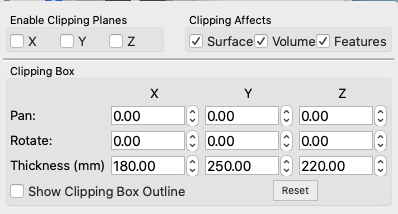

Clipping
Clipping contains controls for clipping the
view in the X, Y, and Z planes for Surface, Volume, and Features
structures in Montage,
Volume,
All, and Surface
Views.
- Checkbox toggles turn the clipping
off/on in each plane and for Surface, Volume, or Features
structures.
- Show Clipping Box Outline toggle
is useful for seeing exactly what will be clipped when
clipping planes are turned on.
